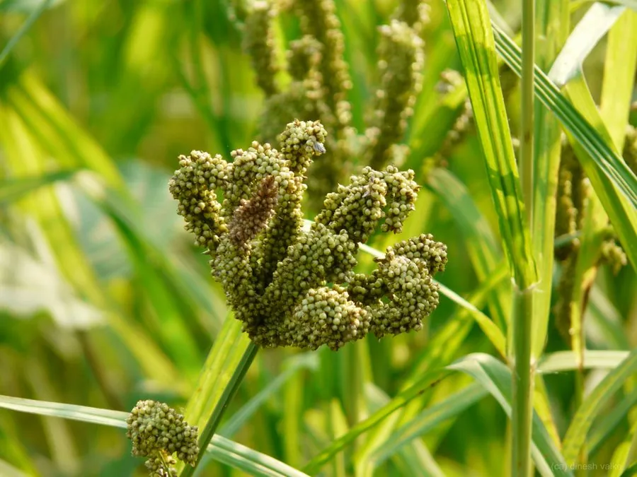

农作物与经济植物 · 植物界
龙爪稷 Eleusine coracana

禾本科一年生草本，穗形如拳、种子耐储，是非洲与南亚干旱地区的重要杂粮，耐旱耐瘠、生长期短。
- 分类
- 门被子植物门纲木兰纲目禾本目科禾本科属穇属
- 栖息环境
- 热带、亚热带干旱高原的雨养农田，耐旱、耐瘠薄
- 地理分布
- 原产东非高原，印度、尼泊尔、非洲多国及中国南方部分地区栽培
- 保护级别
- 暂无评估；栽培作物，地方品种资源丰富
物种志
龙爪稷为禾本科穇属一年生草本，株高 0.5–1.2 米，茎秆粗壮，基部常分枝。叶片线状披针形，宽 0.5–1 厘米。穗状花序数枚呈指状排列于茎顶，形如龙爪或握拳，小穗密生，种子球形，直径 1–2 毫米，红褐或深褐色，成熟后包裹在颖壳中，花期 7–9 月。
龙爪稷原产非洲东部高原，后传入印度与南亚，是当地干旱地区的主粮之一，中国南方部分地区也有种植。它极耐旱、耐瘠薄，生长期仅 3–4 个月，可在雨养条件下稳产。种子可煮粥、磨粉做饼，富含钙、铁与膳食纤维，不含麸质，近年作为健康杂粮受到关注；也可酿酒、作饲料。栽培以直播为主，需注意轮作以防病害。
形态与习性
- 原产地非洲东部高原
- 株高0.5–1.2 米，茎秆粗壮
- 穗形数枚指状穗排列如龙爪
- 用途煮粥磨粉制饼、酿酒、饲料，无麸质
- 栽培雨养直播，耐旱耐瘠，生长期 3–4 个月
- 营养富含钙、铁与膳食纤维
趣味知识
- 龙爪稷的穗像一只握紧的拳头或龙爪，因此得名，英文名也取自它指状的穗形。
- 它极耐旱耐瘠，在雨养条件下也能稳产，是非洲干旱区的重要口粮。
- 种子富含钙，含量在谷物中名列前茅，且不含麸质。
- 印度南部用龙爪稷粉做的“拉吉饼”是传统早餐主食。